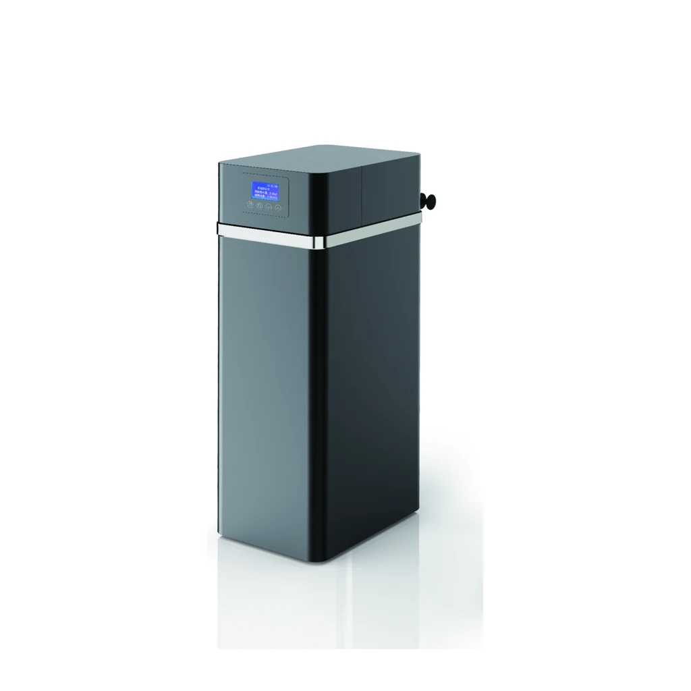
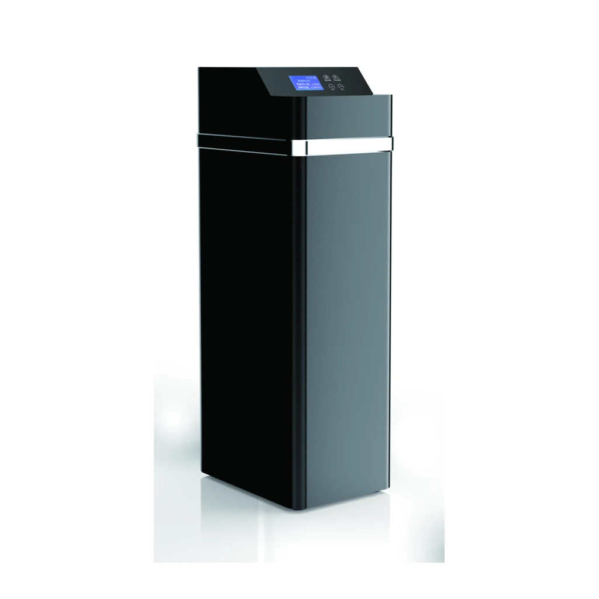
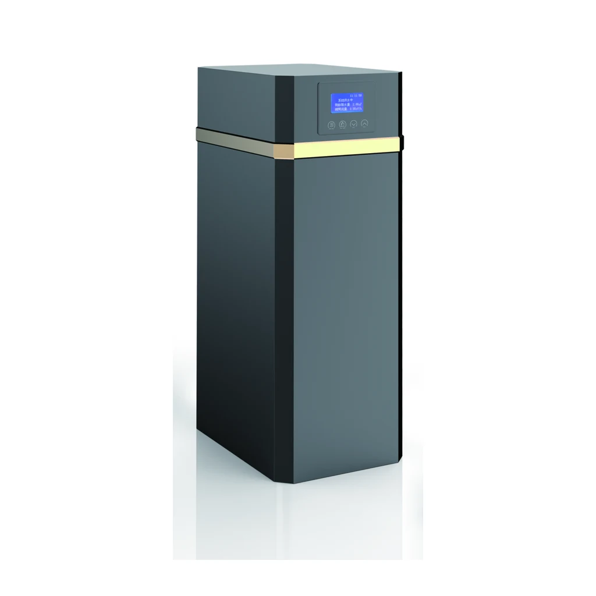

Filtre automatique
Série YC-J de filtres automatiques
Comparez les trois modèles d’armoire rectangulaire selon le débit, le volume de charbon actif, la taille de cuve FRP et les dimensions d’encombrement indiqués dans la source.
Comparer la sérieLes filtres automatiques et les adoucisseurs automatiques sont présentés séparément. Les références publiques suivent la nomenclature YC approuvée ; les débits, volumes de média ou de résine, dimensions de cuve FRP, détails de vanne et dimensions d’armoire reprennent la notation de la source.
Chaque série présente trois références de modèle exactes et un tableau HTML complet de comparaison des caractéristiques.
Comparez les trois modèles d’armoire rectangulaire selon le débit, le volume de charbon actif, la taille de cuve FRP et les dimensions d’encombrement indiqués dans la source.
Comparer la série
Comparez les trois configurations de la famille cylindrique YC-JA selon le débit, le volume de charbon actif et la cuve FRP indiqués dans la source.
Comparer la série
La famille YC-R regroupe trois tailles d’armoire d’adoucisseur automatique ; la source indique le mode de vanne, le raccordement et la plage de pression.
Comparer la série
Le suffixe YC-RA désigne une famille d’armoires distincte dans la source, avec les volumes de résine documentés de 12 L, 18 L et 25 L.
Comparer la série
La famille YC-RB présente trois hauteurs d’armoire figurant dans la source, ainsi que les données documentées sur la vanne d’adoucisseur et le mode de régénération.
Comparer la série
La famille YC-RC reprend les valeurs de paramètres confirmées de la série A avec les suffixes de modèle C et ses propres images d’armoire issues de la source.
Comparer la série
La famille YC-RD reprend les valeurs de paramètres confirmées de la série B avec les suffixes de modèle D et ses propres images d’armoire issues de la source.
Comparer la sérieLa source du filtre indique une vanne de filtration automatique, un volume de charbon actif et la taille de cuve FRP. Elle ne précise ni grade de média, ni certification, ni résultat de traitement garanti.
La source de l’adoucisseur indique une vanne d’adoucissement automatique, le mode de régénération, le volume de résine, la vanne de saumure et la taille de cuve FRP. Elle ne précise ni la composition de la résine ni la capacité d’adoucissement nominale.
Utilisez le débit, le volume de média ou de résine, la taille de cuve et les dimensions d’armoire pour préparer le devis ; confirmez séparément les conditions de l’eau.
| Modèle | Série | Débit | Volume de charbon actif | Dimension de la cuve FRP | Dimensions du produit (avec by-pass) |
|---|---|---|---|---|---|
| YC-J1000 | YC-J | ≤1.0T/H | 12L | 1015 | 278X278X510mm |
| YC-J2000 | YC-J | ≤2.0T/H | 18L | 1024 | 278X278X710mm |
| YC-J3000 | YC-J | ≤3.0T/H | 25L | 1035 | 278X278X1020mm |
| YC-J1000A | YC-JA | ≤1.0T/H | 12L | 1015 | 299X299X567mm |
| YC-J2000A | YC-JA | ≤2.0T/H | 18L | 1024 | 299X299X781mm |
| YC-J3000A | YC-JA | ≤3.0T/H | 25L | 1035 | 299X299X1070mm |
| Modèle | Série | Débit | Volume de résine | Dimension de la cuve FRP | Dimensions du produit (avec by-pass) |
|---|---|---|---|---|---|
| YC-R1000 | YC-R | ≤1.0T/H | 12L | 1015 | 270X420X510mm |
| YC-R2000 | YC-R | ≤2.0T/H | 18L | 1024 | 270X420X710mm |
| YC-R3000 | YC-R | ≤3.0T/H | 25L | 1035 | 270X420X1020mm |
| YC-R1000A | YC-RA | ≤1.0T/H | 12L | 1015 | 270X420X510mm |
| YC-R2000A | YC-RA | ≤2.0T/H | 18L | 1024 | 270X420X710mm |
| YC-R3000A | YC-RA | ≤3.0T/H | 25L | 1035 | 270X420X1020mm |
| YC-R1000B | YC-RB | ≤1.0T/H | 12L | 1015 | 270X420X510mm |
| YC-R2000B | YC-RB | ≤2.0T/H | 18L | 1024 | 270X420X710mm |
| YC-R3000B | YC-RB | ≤3.0T/H | 25L | 1035 | 270X420X1020mm |
| YC-R1000C | YC-RC | ≤1.0T/H | 12L | 1015 | 270X420X510mm |
| YC-R2000C | YC-RC | ≤2.0T/H | 18L | 1024 | 270X420X710mm |
| YC-R3000C | YC-RC | ≤3.0T/H | 25L | 1035 | 270X420X1020mm |
| YC-R1000D | YC-RD | ≤1.0T/H | 12L | 1015 | 270X420X510mm |
| YC-R2000D | YC-RD | ≤2.0T/H | 18L | 1024 | 270X420X710mm |
| YC-R3000D | YC-RD | ≤3.0T/H | 25L | 1035 | 270X420X1020mm |
Le modèle de taille 3000 de chaque famille indique ≤3,0 T/h dans la source. Cette notation ne garantit pas le débit obtenu sur site.
Non. La source des filtres indique le volume de charbon actif, tandis que celle des adoucisseurs indique le volume de résine et un mode de régénération.
Non. La source approuvée ne fournit aucune revendication de certification ni de résultat d’essai de performance.